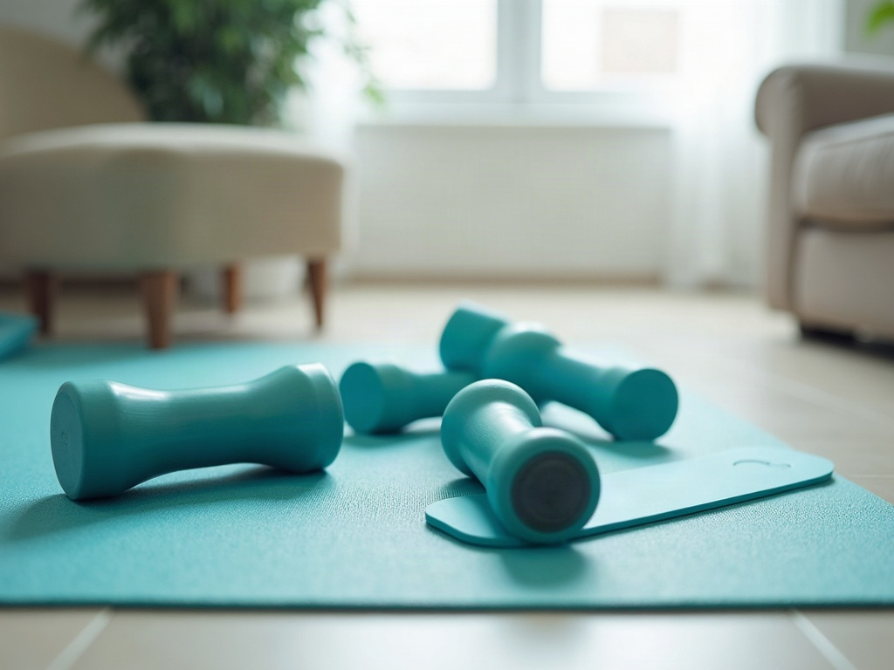
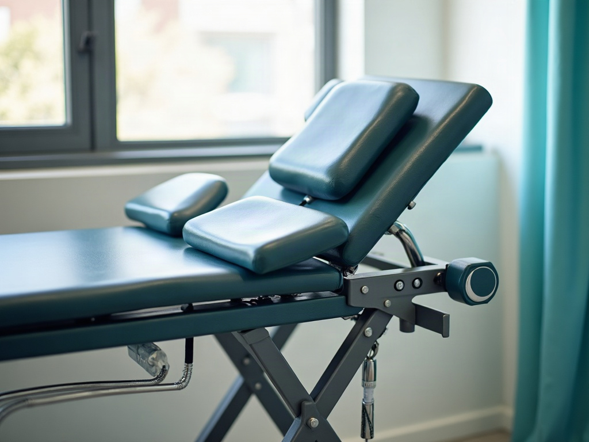
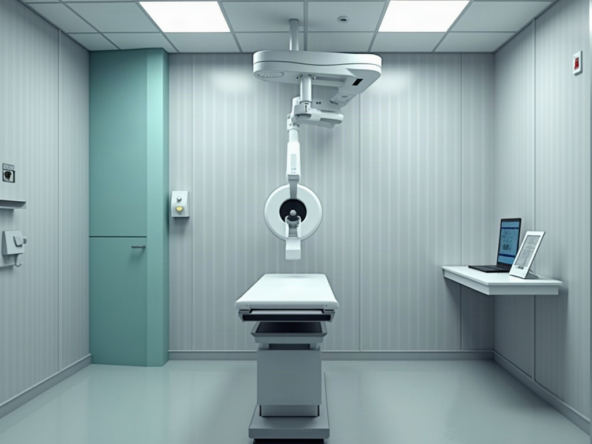

Chiropractic services San Jose
Chiropractic and non-surgical pain services in San Jose
We treat injuries and long-standing pain without surgery and without drugs. Which treatment you receive depends on what your examination and testing show, not on which treatment we happen to offer. Every path on this page starts the same way, with an evaluation.
- 01 Chiropractic care
- 02 Non-surgical spinal decompression
- 03 Laser therapy
- 04 Medically supervised weight loss
- 05 Testing and imaging
Whichever treatment turns out to be the right one, the first step is the same. Book the consultation and evaluation at no cost to you. Same-day appointments are usually available [UNCONFIRMED]. You can also call the clinic at (408) 292-2225 [UNCONFIRMED].
Book a no-cost evaluationAssessment comes first
We test first, then we treat
Treatment chosen before an injury is measured is a guess. So we start by examining you and, where it is indicated, measuring what is actually happening. That means electromyography (EMG, a recording of the electrical activity in a muscle and the nerve that supplies it), nerve conduction velocity testing (a measurement of how fast a signal travels along a nerve), diagnostic vascular studies (an assessment of blood flow), diagnostic ultrasound, and high-frequency digital X-ray. All primary testing is performed here, on site, in a single visit, without sending you to an outside facility first. The findings decide which treatment below you are routed to. They also tell us when the answer is none of them.
The treatment lines
Four treatment lines, one clinician
-
01
Chiropractic care.
Corrective chiropractic and trauma rehabilitation for neck, back and headache pain, including pain that began in a collision. Non-surgical and drug-free, with individual results varying by person and by cause.
Read about chiropractic care
Chiropractic care -
02
Non-surgical spinal decompression.
Cervical (neck) and lumbar (lower back) decompression, used to take pressure off an injured or bulging disc without an operation. Individual results vary.
Read about spinal decompression
Spinal decompression -
03
Laser therapy.
Cold laser therapy, used alongside hands-on care for soft-tissue injury and pain. Individual results vary.
Read about laser therapy -
04
Medically supervised weight loss.
A weight-loss programme directed by the clinic's clinician rather than sold as a product off a shelf. Individual results vary.
Read about medical weight loss
Testing and imaging
Testing and imaging, done here
High-frequency digital X-ray and diagnostic ultrasound (imaging that uses sound rather than radiation) are both performed on site, in the same visit as your examination. Digital X-ray is standard across this market, and on its own it proves very little. The nerve and vascular testing is the unusual part. Across 53 pages from six competing San Jose auto-injury properties, reviewed on 2026-08-20, none advertised electromyography, nerve conduction velocity testing or diagnostic vascular studies. That is a statement about what other clinics publish, not about what they are able to do.
See the full testing list
Who we treat
San Jose and Santa Clara CountyWe see patients across San Jose and Santa Clara County. Mostly two groups. People hurt in a car accident, who need the injury measured and written down while it is fresh. And people whose neck, back or head has hurt for months, who have rested it, and who are no better for the rest. You do not need to have been in an accident to be seen here. If your case needs care we do not provide, we will say so and point you toward the orthopedist, neurologist, physical therapist or imaging facility that does.